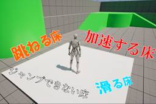

historia Inc – 株式会社ヒストリア
https://historia.co.jp
ゲームの企画・開発・制作協力の株式会社ヒストリアです。UE4やVRの最先端技術を使ってPlayStation®4などのコンシューマーゲームやアーケードゲーム、デジタルコンテンツを創出し、人生観を変えるような体験を提供します。
フィード

[UE5]初心者向け！特殊床ギミックをブループリントで簡単実装してみよう！
historia Inc – 株式会社ヒストリア
執筆バージョン: Unreal Engine 5.6 こんにちは！今回は上に乗ると特殊なギミックが発動する床を手軽に作っていきたいと思います！ 目次 前準備（床用Blueprintの作成） 加速する床 ジャンプ不可の減速 […]The post [UE5]初心者向け！特殊床ギミックをブループリントで簡単実装してみよう！ first appeared on historia Inc - 株式会社ヒストリア.
3日前

[UE5] 16:9のビューポートのスクショを2秒で撮る方法！
historia Inc – 株式会社ヒストリア
執筆バージョン: Unreal Engine 5.5 資料などのため、開発中の画面の画像が必要になることがあると思います。 外部のツールでビューポートを切り抜いても良いですが、16:9の画像が欲しい場合など、準備が絶妙に […]The post [UE5] 16:9のビューポートのスクショを2秒で撮る方法！ first appeared on historia Inc - 株式会社ヒストリア.
10日前
【予告】12月19日(金) 「UE5ぷちコン 映像編7th」開催決定！ Unreal Engineの学習向け作品コンテスト
historia Inc – 株式会社ヒストリア
２、３日でサクッと作ってサクッと応募！ “UE5ぷちコン 映像編7th”開催決定！ 開催期間： 2025年12月19日(金)～2026年1月12日(月・祝)(1月13日(火)AM10:00)まで！ […]The post 【予告】12月19日(金) 「UE5ぷちコン 映像編7th」開催決定！ Unreal Engineの学習向け作品コンテスト first appeared on historia Inc - 株式会社ヒストリア.
17日前
[UE5]Shotコマンドのプチ解説
historia Inc – 株式会社ヒストリア
執筆バージョン: Unreal Engine 5.4 スクリーンショットを取るときに使用できるShotコマンド。 実は引数を付けることで処理を調整できることをご存じでしたか？ ということでShotコマンドで使える引数のプ […]The post [UE5]Shotコマンドのプチ解説 first appeared on historia Inc - 株式会社ヒストリア.
17日前
EdgeTech+2025【Epic Games Japan】【東陽テクニカ】ブースにデモを展示します！
historia Inc – 株式会社ヒストリア
EdgeTech+2025にて、ヒストリア・エンタープライズが制作した自動車業界向けデモの展示が決定いたしました！ Epic Games Japanさま、東陽テクニカさまのブースにて展示いたします。 また、2日目にはEp […]The post EdgeTech+2025【Epic Games Japan】【東陽テクニカ】ブースにデモを展示します！ first appeared on historia Inc - 株式会社ヒストリア.
18日前
「Unreal Fest Tokyo 2025」でUE5ぷちコン試遊ブースを出展。今年は2つ講演も行います！
historia Inc – 株式会社ヒストリア
Unreal Fest Tokyo 2025 ぷちコンブース展示作品を公開！ エピック ゲームズ ジャパンが主催するUnreal Engineの公式大型イベント「Unreal Fest Tokyo 2025」が リアルイ […]The post 「Unreal Fest Tokyo 2025」でUE5ぷちコン試遊ブースを出展。今年は2つ講演も行います！ first appeared on historia Inc - 株式会社ヒストリア.
22日前
[UE5]ShallowWaterRiverを使って流れる川を作ってみよう
historia Inc – 株式会社ヒストリア
執筆バージョン: Unreal Engine 5.6 こんにちは。 今回は5.6より新実装されたWaterAdvancedプラグインのShallowWaterRiverを使ってランドスケープに流れる川を作っていきます。 […]The post [UE5]ShallowWaterRiverを使って流れる川を作ってみよう first appeared on historia Inc - 株式会社ヒストリア.
24日前
UE5による車載HMIデモ「historia HMI Realize」を公開！ リッチ表現×低処理負荷を実現
historia Inc – 株式会社ヒストリア
株式会社ヒストリアの非エンターテイメント分野のブランドであるヒストリア・エンタープライズは、これまで10年以上にわたり自動車業界向けのコンテンツ制作を行ってきました。 その制作経験を基に“リッチ表現”と“低処理負荷”の両 […]The post UE5による車載HMIデモ「historia HMI Realize」を公開！ リッチ表現×低処理負荷を実現 first appeared on historia Inc - 株式会社ヒストリア.
25日前
設立12周年を迎えました！
historia Inc – 株式会社ヒストリア
ヒストリア代表の佐々木です。 ヒストリアは2025年10月31日にめでたく12周年を迎えました！ また、先月第12期を終え、10月1日より第13期に突入しています。 業界および世の中が日々目まぐるしく変化し […]The post 設立12周年を迎えました！ first appeared on historia Inc - 株式会社ヒストリア.
1ヶ月前
[UE5] SpawnActorを高速化！ Generate Optimized Blueprint Component Dataをご紹介
historia Inc – 株式会社ヒストリア
執筆バージョン: Unreal Engine 5.6 UEがヒッチする理由は二つある。GCとSpawnActorだ！(諸説あります) ゲームを作っているとどうしても避けられないSpawnActorですが、こ […]The post [UE5] SpawnActorを高速化！ Generate Optimized Blueprint Component Dataをご紹介 first appeared on historia Inc - 株式会社ヒストリア.
1ヶ月前